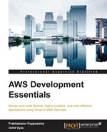
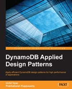

I turn complex technology change
into measurable business outcomes —
from C-suite strategy to live platform.
15+ years leading enterprise-scale programs across banking, retail, and tech — from C-suite strategy to platform delivery. I don’t just advise on transformation; I architect and execute it.
“I bridge the gap between vision and execution — translating ambitious digital strategy into secure, scalable platforms that actually ship, perform, and deliver value at enterprise scale.”
My approach is grounded in strong engineering fundamentals married with commercial acumen. I work directly with CIOs, CTOs, and business executives as a trusted advisor, cutting through complexity to define clear roadmaps and govern delivery with accountability.
Whether establishing enterprise architecture governance at Asia’s largest bank, accelerating a digital lending platform in weeks, or standing up a GenAI capability from scratch — I bring calm, decisive technical leadership to the hardest problems.
Applied TOGAF, SAFe, and BIAN to define reference architectures and modernisation roadmaps. Governed multi-cloud platforms across AWS, Azure, GCP, and Oracle — embedding Kubernetes, OpenShift, and FinOps practices at scale.
Designed secure, self-service internal developer platforms by embedding policy-as-code and software supply chain controls into CI/CD pipelines — accelerating delivery without sacrificing compliance or resilience.
Led enterprise data modernisation programs delivering trusted, analytics-ready data with end-to-end lineage. Defined lifecycle and archival strategies that cut costs, strengthened regulatory compliance, and improved auditability.
Led enterprise GenAI initiatives end-to-end — from use-case design and model evaluation to MLOps and responsible adoption frameworks. Delivered platforms that improved productivity and decision-making at scale.
Pragmatic. Outcome-focused. Relentlessly curious.
I lead enterprise technology transformation by combining architecture strategy with modern engineering execution. My core strengths span Enterprise Architecture, Platform Engineering, DevSecOps, SRE, Generative AI, Cloud Transformation, and Data Modernisation. I focus on building secure, scalable, and resilient platforms that improve delivery speed, reliability, governance, and cost outcomes across business-critical systems.
I partner with leadership teams to convert architecture and engineering strategy into measurable business outcomes across speed, resilience, security, and cost efficiency.
I assess current-state platforms, operating models, and investment priorities to define practical transformation options with clear business value.
I define target-state architectures and modernization roadmaps that align technology strategy with governance, risk, and growth priorities.
I design secure, self-service platform capabilities and DevSecOps controls that improve delivery speed while maintaining compliance and reliability.
I run executive and engineering workshops on GenAI adoption, cloud operating models, and data modernization with implementation-ready outcomes.
I focus on high-impact domains that improve business agility, engineering effectiveness, and governance maturity at enterprise scale.
Reference architecture, capability mapping, and modernization pathways across business-critical domains.
Internal developer platforms, secure CI/CD, and policy-as-code guardrails for faster, safer delivery.
Multi-cloud architecture, SRE operating models, and cost transparency practices for resilient scale.
Enterprise GenAI architecture, MLOps enablement, and trusted data foundations for decision intelligence.
Three engagement modes — each designed to meet organisations at the right point in their journey, with clear outputs and no overhead.
Strategy & Advisory
Short, high-intensity engagements for leadership teams facing critical architecture or transformation decisions. I assess, challenge, and define a clear path forward — with options, trade-offs, and a prioritised roadmap you can act on immediately.
Design & Blueprint
From strategy to buildable design. I define target-state architectures, governance models, and implementation blueprints that engineering teams can execute — with enough rigour to survive contact with reality.
Embedded Delivery
Hands-on delivery leadership for complex programs — embedded in your organisation, driving technical outcomes, managing architecture decisions in real time, ensuring what gets built matches what was designed.
Working with Uchit on his latest book "Mastering AWS Development" was a complete delight. I found him to be very professional and someone who can be relied upon. He is a wonderful person to talk to and is even more great to work with. Having published 4 books and reviewed 3 at the mere age of 26, I'd say he is no less than a genius. With a very positive outlook towards life, he definitely brings a certain amount of optimism in the plate. This helps in boosting one's confidence in taking any problem heads on. This is one of Uchit's most admirable quality and I consider myself lucky to have the opportunity to work with him.
What do you do when you have a project that doesn't have any requirements, has a business owner that has too much to do and not enough time to focus, wants to use technology that has never been used at the company before, has an unrealistic deadline, not enough money, but a vision so grand and unifying that you feel compelled to deliver as best you can? Call Uchit! We faced exactly that situation on a project and Uchit was assigned. Your technical skills, although exemplary, are not what set you apart. Your ability to accept rapid change, pivot with calm, and keep moving no matter what got thrown at the team simply amazed me. You challenged appropriately, offered ideas others had not thought of, and worked tirelessly to meet often unrealistic expectations. If I can learn to do that half as well as you do, you will have taught me a life skill that stays with me for a very long time.
I had the pleasure of working with Uchit in Opex and REAN. Uchit is by far the most genius person I have come across, an expert in DevOps, HashiCorp tools, and a great content writer. He was always up for speaking at conferences, solving complex technical and business problems, and always had answers to everything. He is a delightful and helpful person to work with.
When I think of Uchit, I think of a techno-business man. Few technical people understand the meaning of words like 'delivering value' and 'business growth'. Uchit is one of those rare people who can balance technology with a business goal. Would love to work with Uchit anytime there is an opportunity!
I had the opportunity of working with Uchit very closely back in 2016 when Uchit and myself were part of the very first (initial) hires in Oracle (India) as part of an IaaS Specialist Team focusing on Oracle Cloud Infrastructure (IaaS - Classic & OCI). It was very apparent from our initial meeting, and then synergizing with you on multiple customer accounts, that Uchit brought a lot of Cloud, and specifically DevOps, DevSecOps and Agile knowledge to the table. With clear lines of communication, Uchit added a lot of value to our new on-cloud customer acquisitions and on-boarding. A very good team player, with an eye for detail and passion for excellence, it was a pleasure working with him. I highly recommend him for Cloud, Multi-Cloud, DevOps, DevSecOps and Quality Engineering roles without any reservations.
I have known Uchit since he was appointed at Attune Infocom as a Cloud Computing System Administrator. In the months that followed, he showed complete dedication and commitment to work, which led to his consistent elevation within the organization. He took on Cloud Architecture, strategic consulting, maintenance, administration, security, and corporate training responsibilities, and significantly improved team outcomes. A keen analyst by nature with strong product knowledge, he successfully led the team and consistently demonstrated a focused approach toward growth. He is an asset to any organization, and I am proud to have been his colleague at Attune Infocom.
Real enterprise transformations. Real outcomes. Each engagement represents a mandate to solve something genuinely hard — at scale, under pressure, with results that stick.
Aligned hundreds of initiatives to a unified technology strategy and risk framework. Decision velocity improved, shadow IT reduced, architecture elevated to a board-level asset.
Designed and shipped a cross-region payment platform under a compressed mandate. Launched on time with zero critical production defects across all regions.
Replaced legacy approval workflows with event-driven microservices — turning weeks of credit decisioning into seconds without compromising compliance or audit trails.
Governed, lifecycle-aware archival platform replacing fragmented legacy storage. Full regulatory compliance, end-to-end lineage, and significant cost reduction across petabyte-scale datasets.
Monolith to composable API-first architecture. The phased roadmap connected technology investment to commercial outcomes — faster time-to-market, reduced cost, new revenue-enabling capabilities.
Browse the full collection of enterprise transformation case studies on Medium.
View all on Medium →Six published works spanning Cloud Architecture, Data Engineering, DevSecOps, and Enterprise Integration — each a practitioner’s blueprint, not a theory exercise. Published with Apress and Packt and read by architects and engineers across 4 continents, these books distil hard-won patterns from real enterprise programs into frameworks others can apply immediately.
Applied OpenStack Design Patterns starts off with the basics of OpenStack and teaches you how to map your application flow. Application behavior with OpenStack components is discussed. Once components and architectural design patterns are set up, you will learn how to map native infrastructure and applications using OpenStack. Also covered is the use of storage management and computing to map user requests and allocations. The author takes a deep dive into the topic of High Availability and Native Cluster Management, including the best practices associated with it. The book concludes with solution patterns for networking components of OpenStack, to reduce latency and enable faster communication gateways between components of OpenStack and native applications.
This book is a practical guide to developing, administering, and managing applications and infrastructures with AWS. With this book, you will be able to create, design, and manage a whole application life cycle on AWS by using the AWS SDKs, APIs, as well as the AWS Management Console.
You will start with the basics of AWS development platform and look into creating stable and scalable infrastructures using EC2, EBS, and Elastic Load Balancers. You'll then deep-dive into designing and developing your own web application, and learn about the alarm mechanism, disaster recovery plan, and delve into connecting AWS services through REST-based APIs. Following this, you’ll get to grips with CloudFormation, auto scaling, bootstrap AWS EC2 instances, automation and deployment with Chef, and will develop your knowledge of big data and Apache Hadoop on the AWS Cloud. By the end of this book, you will have learned about AWS billing, cost-control architecture designs, understood some basic AWS Security features and troubleshooting methods, and developed AWS-centric applications based on an underlying AWS infrastructure.

This book is a fast-paced guide to help you with architecture systems and solve technical problems using the latest cloud computing technologies. Starting with the introduction to AWS, you will learn about identifying key AWS storage options, Amazon EBS, Amazon S3 bucket creation, and sample code and libraries. You will learn about computing and networking services using Amazon EBS and EC2 instances. You will efficiently be able to manage services and databases using DynamoDB and understand the key aspects of Amazon RDS. You will also learn about deployment and maintenance using Amazon CloudWatch metrics and alarms, Amazon Identity and Access Management (IAM), and AWS Elastic Beanstalk. Finally, you will explore service object models and the baseline concept of SNS and SQS, and then build an app using these new skills.

The book includes a significant number of examples that can be used by new users and experts alike. The book begins with a description on the concepts of data model including tables, items, and attributes, primary key, indexes, and design patterns. You will learn to access DynamoDB in the Management Console, command line, and eclipse plugin. Users can also gain insights into DynamoDB locals and CLI commands. Furthermore, global and local secondary indexes and its importance in DynamoDB will be looked into. Users can also learn how to use Query and Scan operations in DynamoDB tables, along with DynamoDB APIs and their formats. The book ends by covering the best design use cases DynamoDB architectures along with real-time problem statements and their best solutions.
Mule ESB Cookbook provides solutions for developers working on Mule ESB and integrating Mule with other technologies. It focuses on development and delivery using Mule ESB through integrating, migrating and upgrading advanced technological tools.
Named among the 50 Most Influential DevSecOps Professionals globally, Uchit has delivered keynotes and sessions at premier technology conferences across ASEAN, Europe, and the USA — with consistently high audience ratings and real-world technical depth.
Embedding API design governance as a day-zero discipline to eliminate integration failures and accelerate time-to-market.
A pragmatic path for DevSecOps adoption — addressing real tensions between speed, governance, and resilience at enterprise scale.
Compressing weeks of installations into minutes — shifting deployment from organisational bottleneck to competitive advantage.
Cloud-native QA acceleration — parallel cross-browser testing cutting test cycles from hours to minutes inside the DevSecOps pipeline.
Infrastructure-as-code at scale — practical Chef automation patterns across hybrid cloud environments that engineers could apply immediately.
Scaling startup infrastructure from tens to hundreds of customers in weeks using Terraform, Packer, Chef, Serf, and Consul.
How a Fortune 500 replaced 15-year-old provisioning scripts with Chef, Packer, and service discovery across isolated data centres.
Named among the 50 Most Influential DevSecOps Professionals globally. 30+ sessions delivered across ASEAN, Europe, and the USA — at HashiConf, Cloud Expo Asia, APIDays, TopConf, and more. Talks consistently rated highly for technical depth, clarity, and practical takeaways that engineers and executives can act on the next day.
I speak to both technical and executive audiences. Topics are tailored to your event — below are the themes I cover most frequently, each drawn from live enterprise experience.
How EA must evolve beyond frameworks and diagrams to become a living discipline that governs AI adoption, cloud sprawl, and platform complexity at enterprise scale.
Security as an accelerator, not a bottleneck. How organisations embed policy-as-code, supply chain security, and continuous compliance without slowing delivery teams.
Building internal developer platforms that reduce cognitive load, enforce golden paths, and make high-quality delivery the path of least resistance for every engineering team.
Beyond the hype: how to evaluate, architect, and govern GenAI adoption — from LLM selection and RAG pipelines to MLOps, responsible AI, and measurable business outcomes.
Why most data programs fail, and how to build data ecosystems with end-to-end lineage, lifecycle governance, and analytics readiness — turning data from liability into asset.
Real-world stories of scaling startup and enterprise infrastructure using Terraform, Chef, Packer, and Consul — from VC funding to Fortune 500 replacement of 15-year-old scripts.
Available for keynotes, conference sessions, executive briefings, and workshops. I speak to both technical and business audiences and tailor every session to what your audience needs to walk away with.
I mentor engineers, architects, and technology leaders at inflection points — the move from IC to lead, from lead to principal, from technical to strategic. My mentoring is direct, practical, and grounded in 15+ years of real delivery across some of the most demanding organisations in the world.
Building deliberate careers — not accidental ones. How to position yourself for senior individual contributor and leadership roles in enterprise technology without losing technical credibility.
How to translate engineering depth into business influence. Making the shift from solving technical problems to defining and leading programmes that connect technology investment to commercial outcomes.
Leading engineering teams and architecture practices with authority and clarity. Navigating stakeholders, managing technical debt politically, and building systems thinking into your leadership style.
Deep mentoring for those moving into Enterprise Architecture, Platform Engineering, or DevSecOps leadership — with real patterns, frameworks, and decision models from live enterprise programs.
How to build a credible technical voice — through writing, speaking, and building in public. Turning expertise into influence beyond your organisation.
Navigating multinational enterprise programs across ASEAN, Europe, and Australia. Building relationships and delivering outcomes across different organisational cultures and stakeholder styles.
“The best mentor I ever had didn’t tell me what to do. They helped me think more clearly about the right question. That’s the kind of mentor I try to be.”
I work with people who are serious about growing. That means being honest when something isn’t working, being specific about what needs to change, and holding you accountable to the goals you set. I don’t do motivational speeches. I do working sessions with real outputs.
Available via Emergent Mentors for structured 1:1 mentoring sessions. Also open to informal conversations for people earlier in their journey.
Practitioner writing on Enterprise Architecture, GenAI adoption, Platform Engineering, Data Modernisation, and Engineering Leadership — published on Medium and read by architects and engineers globally.
How EA must evolve from static frameworks to a living discipline governing AI adoption, cloud sprawl, and platform complexity at enterprise scale.
Read on Medium →Designing data ecosystems that are AI-ready by default — from vector-native architectures to data mesh patterns for large-scale analytics.
Read on Medium →How to connect platform and engineering metrics to commercial outcomes — and stop losing executive budget conversations.
Read on Medium →Event-driven, API-first, and cell-based architectures in practice — patterns that survive contact with real enterprise constraints.
Read on Medium →Why data lineage is the unsexy capability that determines whether your data programme succeeds or becomes another expensive failure.
Read on Medium →Browse all articles on Enterprise Architecture, DevSecOps, GenAI, Cloud, and Engineering Leadership.
View all articles →Whether you’re scaling a platform, untangling architecture debt, making AI actually work, or just want a sharp second opinion — this is where the conversation starts.
Based in Melbourne. Always up for a sharp conversation over great coffee.
Book a catch-up